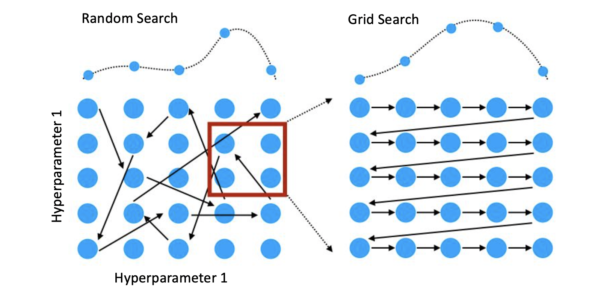
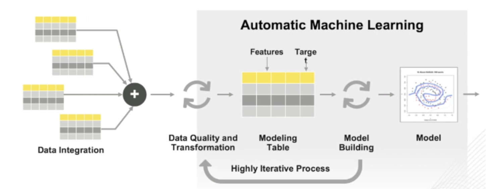

Automated Machine Learning with SkLearn¶
In this post Ill explain automated machine learning (AutoML); and provide an example for a simple classificatino tasks using various common algorithms in a frequentist and bayesian setting
What is AutoML?¶
Automated Machine Learning (AutoML) is tied in with producing Machine Learning solutions for the data scientist without doing unlimited inquiries on data preparation, model selection, model hyperparameters, and model compression parameters. On top of that AutoML frameworks help the data scientist in:
Data visualization
Model intelligibility
Model deployment
AutoML is viewed as about algorithm selection, hyperparameter tuning of models, iterative modeling, and model evaluation. It is about making Machine Learning tasks easier to use less code and avoid hyper tuning manually.
Random Search¶
The simplest way to think about hyper parameter optimization is to randomly try different combinations and pick the best setting. A random search finds better models by effectively searching a larger, less promising configuration space, but considering the combinatorics, this is obviously not sutable as our only strategy.
Grid Search¶
Another approach is to iterate through a list of possible configurations, possibly near a standard hyperparameters used in other examples, or using some heuristics. This is know as grid search. If you have a problem that is similar to a high permiming example, I would recommend using grid search. If you have no idea, you can use random search for a broad serach, and grid serach for tunning.
Sklearn tools¶
Below is a simple example on how to generate a GridSearchCV object using Sklearn Library. Note the “CV” stands for CrossValidation, since each Grid configuration is tested in a cross-validated comparison. GridSearchCV implements a “fit” and a “score” method. It also implements “score_samples”, “predict”, “predict_proba”, “decision_function”, “transform” and “inverse_transform” if they are implemented in the estimator used. For more information read the docs: GridSearch
from sklearn.preprocessing import StandardScaler
from sklearn.pipeline import make_pipeline
from sklearn.model_selection import GridSearchCV
from sklearn.svm import SVR
# Instantiate a SVR model with standard scaler
# Create pipeline
svr = make_pipeline(StandardScaler(), SVR(kernel='linear'))
#Define parameter grid
parameters = {'svr__kernel':['linear', 'rbf'], 'svr__epsilon':[0.1, 0.2, 0.3,0.6], 'svr__C': [0.1,0.5,1,2,3]}
# Grid cross-validation object is ready
svr = GridSearchCV(svr, parameters)